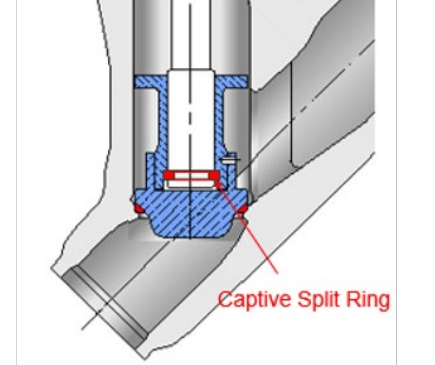
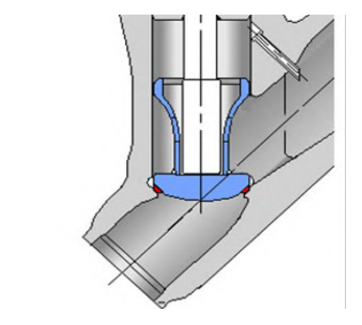

Stop vs. Stop-Check Function
Stop Function

Valvehead and stem connected by a captive split ring — the valve opens and closes only on handwheel/actuator operation, in either flow direction. No automatic protection against reverse flow.
Stop-Check Function

Valvehead and stem free of each other — the disk still seats and stops reverse flow even if the actuator or handwheel is left open or fails. The correct call whenever isolation AND backflow protection are both required from the same body.
After Control Valve Handbook, 6th ed., Figs. 10.17 & 10.18 — content in this chapter is credited to IPT's Pipe Trades Handbook (Robert A. Lee), reprinted at CVH Ch. 10; used directly. Component Index: cvh-cmp-stop-function, cvh-cmp-stop-check-function.